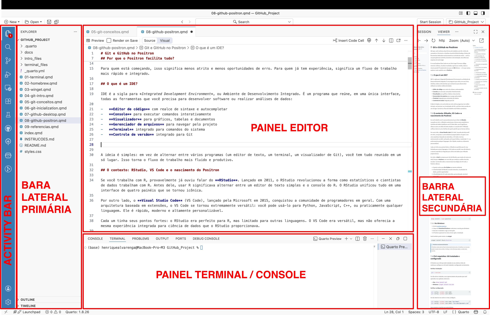
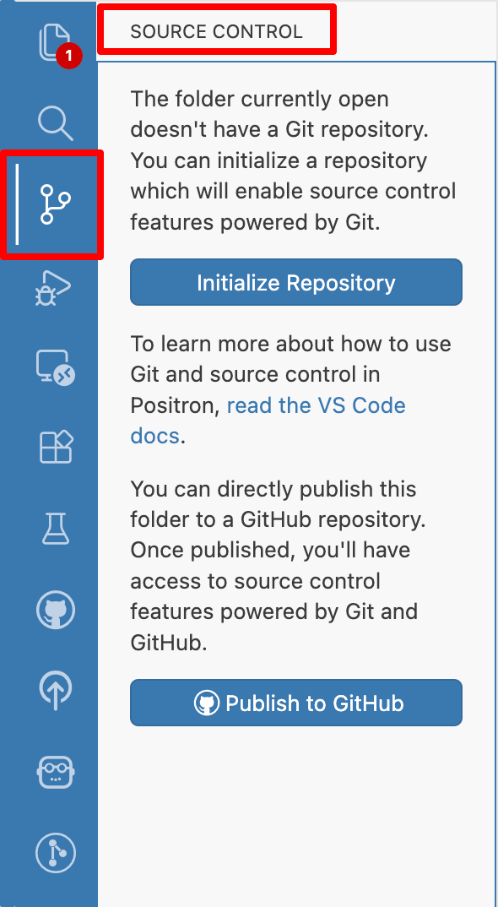

9 Git e GitHub no Positron
Até aqui, você conheceu duas formas de trabalhar com Git: a linha de comando no Terminal e a interface visual do GitHub Desktop. Ambas são ferramentas dedicadas exclusivamente ao controle de versão — você as usa para gerenciar commits, branches e sincronização, mas edita seus arquivos em outro lugar.
E se você pudesse fazer tudo em um único lugar? Escrever código, executar análises, visualizar resultados e gerenciar versões, tudo na mesma janela? É exatamente isso que um IDE oferece — e é o que vamos explorar neste capítulo com o Positron.
9.1 Por que o Positron facilita tudo?
Se você leu o capítulo sobre os conceitos do Git, deve estar se perguntando como tudo aquilo funciona na prática. O Positron torna essa experiência muito mais fluida porque integra tudo em um só lugar.
Quando você abre uma pasta no Positron, o terminal integrado já abre diretamente nessa pasta — você não precisa navegar com cd para chegar ao diretório certo. Esse detalhe, que parece pequeno, elimina uma das maiores fontes de confusão para iniciantes: “será que estou na pasta certa?” No Positron, a resposta é sempre sim.
Além disso, a aba Source Control mostra visualmente o estado dos seus arquivos (modified, staged, committed), e os botões de push e pull estão a um clique de distância. Você pode escrever código, visualizar resultados, fazer commits, resolver conflitos e sincronizar com o GitHub sem alternar entre programas.
Para quem está começando, isso significa menos atrito e menos oportunidades de erro. Para quem já tem experiência, significa um fluxo de trabalho mais rápido e integrado.
9.2 O que é um IDE?
IDE é a sigla para Integrated Development Environment, ou Ambiente de Desenvolvimento Integrado. É um programa que reúne, em uma única interface, todas as ferramentas que você precisa para desenvolver software ou realizar análises de dados:
- Editor de código com realce de sintaxe e autocompletar
- Console para executar comandos interativamente
- Visualizador para gráficos, tabelas e documentos
- Gerenciador de arquivos para navegar pelo projeto
- Terminal integrado para comandos do sistema
- Controle de versão integrado para Git
A ideia é simples: em vez de alternar entre vários programas (um editor de texto, um terminal, um visualizador de Git), você tem tudo reunido em um só lugar. Isso torna o fluxo de trabalho mais fluido e produtivo.
9.3 O contexto: RStudio, VS Code e o nascimento do Positron
Se você trabalha com R, provavelmente já ouviu falar do RStudio. Lançado em 2011, o RStudio revolucionou a forma como estatísticos e cientistas de dados trabalham com R. Antes dele, usar R significava alternar entre um editor de texto simples e o console do R. O RStudio unificou tudo em uma interface de quatro painéis que se tornou icônica.
Por outro lado, o Visual Studio Code (VS Code), lançado pela Microsoft em 2015, conquistou a comunidade de programadores em geral. Com uma arquitetura baseada em extensões, o VS Code se tornou extremamente versátil: você pode usá-lo para Python, JavaScript, C++, ou praticamente qualquer linguagem. Ele é rápido, moderno e altamente personalizável.
Cada um tinha seus pontos fortes: o RStudio era perfeito para R, mas limitado para outras linguagens. O VS Code era versátil, mas não oferecia a mesma experiência integrada para ciência de dados que o RStudio proporcionava.
Em 2024, a Posit (a empresa por trás do RStudio, que mudou de nome em 2022) lançou o Positron: um novo IDE que combina o melhor dos dois mundos. Construído sobre a mesma base tecnológica do VS Code, o Positron oferece:
- Suporte nativo para R e Python no mesmo ambiente
- A familiaridade do RStudio (console interativo, visualizador de dados, painéis organizados)
- A flexibilidade do VS Code (extensões, personalização, terminal integrado)
- Integração nativa com Git e GitHub
O Positron ainda está em desenvolvimento ativo, mas já é uma opção robusta para quem quer um ambiente moderno para ciência de dados.
9.4 Instalando o Positron
O Positron é gratuito e está disponível para Mac, Windows e Linux.
9.4.1 No Mac
- Acesse positron.posit.co
- Clique em Download Positron e selecione a versão para macOS
- Abra o arquivo
.dmgbaixado e arraste o Positron para a pasta Aplicativos - Na primeira execução, o macOS pode pedir confirmação de segurança — clique em Abrir
Você também pode instalar via Homebrew:
brew install --cask positron9.4.2 No Windows
- Acesse positron.posit.co
- Clique em Download Positron e selecione a versão para Windows
- Execute o instalador e siga as instruções
- O Positron aparecerá no menu Iniciar após a instalação
Você também pode instalar via winget:
winget install Posit.PositronO Positron ainda está em fase de desenvolvimento ativo. A interface e os recursos podem mudar entre versões. Verifique o site oficial para obter a versão mais recente.
9.5 Pré-requisitos: Git instalado e configurado
O Positron usa o Git que está instalado no seu sistema. Antes de continuar, verifique se o Git está instalado e configurado corretamente.
Verificar instalação:
git --versionSe não estiver instalado, use os gerenciadores de pacotes que você aprendeu nos capítulos anteriores:
- Mac:
brew install git - Windows:
winget install Git.Git
Verificar configuração:
git config --global user.name
git config --global user.emailSe não retornar seu nome e e-mail, configure:
git config --global user.name "Seu Nome"
git config --global user.email "seu.email@exemplo.com"Use o mesmo e-mail da sua conta GitHub.
9.6 A interface do Positron
Ao abrir o Positron pela primeira vez, você verá uma interface dividida em várias áreas:
- Barra lateral esquerda (Activity Bar): ícones para acessar diferentes funcionalidades — explorador de arquivos, busca, controle de versão, extensões
- Painel principal: onde você edita seus arquivos de código
- Painel inferior: terminal integrado e console do R/Python
- Painel direito (opcional): visualizador de gráficos, help, ambiente de variáveis

O Git é acessado através da aba Source Control, representada por um ícone de ramificação (parece um “Y” de cabeça para baixo) na barra lateral esquerda.

9.7 Iniciando um repositório Git
9.7.1 Opção 1: Inicializar Git em uma pasta existente
Se você já tem uma pasta com arquivos e quer começar a usar Git:
- Abra a pasta no Positron: File → Open Folder (Mac:
Cmd+O/ Windows:Ctrl+O) - Clique na aba Source Control na barra lateral (ícone de ramificação)
- Clique no botão Initialize Repository
Isso cria a pasta oculta .git e começa a rastrear seus arquivos.
- File → Open Folder
- Source Control → Initialize Repository
cd ~/caminho/para/sua/pasta
git init9.7.2 Opção 2: Criar um novo projeto já com Git
No menu, vá em File → New Folder from Template. Dependendo do template escolhido, você pode marcar a opção para inicializar como repositório Git durante a criação.
9.8 Clonando um repositório do GitHub
Para baixar um repositório existente do GitHub:
- Vá em File → New Folder from Git
- Cole a URL do repositório (ex:
https://github.com/usuario/repositorio.git) - Escolha onde salvar localmente
- O Positron clonará o repositório e abrirá a pasta
Você também pode usar a Command Palette: pressione Cmd+Shift+P (Mac) ou Ctrl+Shift+P (Windows) e busque “Workspaces: New Folder from Git”.
File → New Folder from Git → Colar URL → Escolher local
git clone https://github.com/usuario/repositorio.git9.9 Fluxo básico de trabalho
9.9.1 1. Ver alterações
Ao modificar arquivos, eles aparecem automaticamente na aba Source Control com indicadores visuais:
| Indicador | Significado |
|---|---|
| M | Modified — arquivo modificado |
| U | Untracked — arquivo novo, ainda não rastreado pelo Git |
| D | Deleted — arquivo removido |
| A | Added — arquivo adicionado à área de preparação |
Clicando em qualquer arquivo, você vê o diff — uma comparação visual mostrando as linhas removidas em vermelho e as adicionadas em verde.
Aba Source Control mostra alterações automaticamente. Clique em um arquivo para ver o diff.
git status
git diff9.9.2 2. Preparar arquivos (staging)
Para adicionar arquivos à área de preparação:
- Clique no ícone + ao lado de cada arquivo individual, ou
- Clique no ícone + no cabeçalho “Changes” para adicionar todos de uma vez
Os arquivos movem-se para a seção “Staged Changes”.
Clicar no + ao lado do arquivo ou “Stage All Changes”
git add arquivo.R
# ou para todos:
git add .9.9.3 3. Fazer commit
Com arquivos preparados:
- Digite uma mensagem descritiva na caixa de texto acima da lista de arquivos
- Clique no botão Commit (ícone de check) ou pressione
Cmd+Enter(Mac) /Ctrl+Enter(Windows)
Escrever mensagem → Botão Commit (ou Cmd+Enter / Ctrl+Enter)
git commit -m "Sua mensagem de commit"9.9.4 4. Enviar para o GitHub (push)
Após o commit, clique no botão Sync Changes na aba Source Control, ou use os botões específicos:
- Push: envia seus commits locais para o GitHub
- Pull: baixa alterações do GitHub para seu computador
- Sync: faz pull e push em sequência
Você também pode usar o ícone de sincronização na barra de status inferior.
Botão Sync Changes ou Push na barra de status
git push
git pull9.10 Trabalhando com branches
9.10.1 Ver e trocar de branch
A branch atual aparece no canto inferior esquerdo da janela do Positron. Clique nela para ver a lista de branches disponíveis e trocar entre elas.
9.10.2 Criar nova branch
- Clique no nome da branch atual (canto inferior esquerdo)
- Selecione Create new branch
- Digite o nome da nova branch e pressione Enter
Clicar na branch → Create new branch → Nome → Enter
git checkout -b nova-branch9.10.3 Fazer merge
Para incorporar alterações de uma branch em outra:
- Troque para a branch de destino (ex: main)
- Abra a Command Palette (
Cmd+Shift+P/Ctrl+Shift+P) - Busque “Git: Merge Branch”
- Selecione a branch que deseja incorporar
Command Palette → Git: Merge Branch → Selecionar branch
git checkout main
git merge nova-branch9.11 Resolvendo conflitos
Quando há conflitos de merge, o Positron exibe os arquivos problemáticos com um ícone de aviso na aba Source Control.
Ao abrir um arquivo conflitante, você verá o editor de merge de 3 vias, que mostra:
- As alterações da sua branch (Current Changes)
- As alterações da outra branch (Incoming Changes)
- Botões para aceitar uma versão, a outra, ou ambas
Essa visualização é muito mais clara do que resolver conflitos manualmente no Terminal, onde você veria marcadores como:
<<<<<<< HEAD
seu código
=======
código da outra branch
>>>>>>> outra-branchApós resolver o conflito, salve o arquivo e faça um novo commit.
9.12 Integração com GitHub
O Positron facilita a autenticação e integração com o GitHub.
9.12.1 Autenticação
Na primeira vez que você tentar fazer push ou acessar um repositório privado, o Positron pedirá para autenticar com o GitHub. Siga as instruções na tela — geralmente envolve autorizar o Positron via navegador. Após autorizar, você não precisará se autenticar novamente.
9.12.2 Extensões para GitHub
O Positron suporta extensões do ecossistema VS Code. Para uma integração mais completa com GitHub, você pode instalar:
- GitHub Pull Requests and Issues
-
Permite criar, revisar e gerenciar Pull Requests e Issues diretamente no Positron
- GitLens
-
Visualização avançada do histórico, blame em linha (quem alterou cada linha e quando), comparações entre commits
- Git Graph
-
Visualização gráfica do histórico de branches e commits, útil para entender a estrutura do projeto
Para instalar extensões, clique na aba Extensions (ícone de quadrados na barra lateral), busque pelo nome e clique em Install.
9.13 Comparação: Positron vs Terminal
| Operação | Positron | Terminal |
|---|---|---|
| Inicializar repositório | Source Control → Initialize Repository | git init |
| Clonar repositório | File → New Folder from Git | git clone URL |
| Ver alterações | Aba Source Control (automático) | git status / git diff |
| Preparar arquivos | Clicar no + | git add . |
| Commit | Escrever mensagem + botão Commit | git commit -m "msg" |
| Push | Botão Sync ou Push | git push |
| Pull | Botão Sync ou Pull | git pull |
| Ver histórico | Extensão GitLens (opcional) | git log |
| Criar branch | Clicar na branch → Create new branch | git checkout -b nome |
| Trocar branch | Clicar na branch desejada | git checkout nome |
| Merge | Command Palette → Git: Merge Branch | git merge nome |
| Resolver conflitos | Editor de merge de 3 vias | Editar manualmente + git add |
9.14 Atalhos de teclado úteis
| Ação | Mac | Windows |
|---|---|---|
| Abrir Source Control | Ctrl+Shift+G |
Ctrl+Shift+G |
| Abrir Command Palette | Cmd+Shift+P |
Ctrl+Shift+P |
| Commit (após escrever mensagem) | Cmd+Enter |
Ctrl+Enter |
| Abrir terminal integrado | Ctrl+` |
Ctrl+` |
| Abrir pasta | Cmd+O |
Ctrl+O |
| Salvar arquivo | Cmd+S |
Ctrl+S |
9.15 Quando usar a interface vs Terminal?
9.15.1 A interface do Positron é ideal quando você:
- Quer visualizar alterações lado a lado antes de commitar
- Prefere clicar a digitar comandos
- Está aprendendo Git e quer entender o fluxo visualmente
- Trabalha com Pull Requests e Issues do GitHub
- Precisa resolver conflitos e quer ver as diferenças claramente
- Quer fazer tudo em um só lugar: código, análise e versionamento
9.15.2 O Terminal integrado é preferível quando você:
- Precisa de comandos avançados (rebase, cherry-pick, bisect)
- Quer executar scripts ou automações
- Está confortável com a linha de comando
- Precisa de operações não disponíveis na interface
O Positron tem um terminal integrado que abre diretamente na pasta do projeto. Pressione Ctrl+` para abri-lo. Use a interface gráfica para o dia a dia e recorra ao terminal quando precisar de algo mais específico. Os dois funcionam sobre o mesmo repositório.
9.16 Para quem vem do RStudio
Se você já usa RStudio, a transição para o Positron será natural, mas há algumas diferenças importantes:
- Projetos vs Workspaces
-
O RStudio usa arquivos
.Rprojpara definir projetos. O Positron usa o conceito de “workspaces” — basicamente, você abre uma pasta diretamente com File → Open Folder. Não há arquivo de projeto específico. - Localização da aba Git
-
No RStudio, a aba Git fica no painel superior direito. No Positron, é a aba Source Control na barra lateral esquerda.
- Atalhos de teclado
-
Muitos atalhos são diferentes. Você pode personalizar os atalhos em File → Preferences → Keyboard Shortcuts se quiser recriar os atalhos do RStudio.
- Visualização de diff
-
No Positron, o diff é mais visual e interativo, semelhante ao GitHub Desktop. Você pode aceitar ou rejeitar alterações individualmente.
9.17 Fluxo completo: do zero ao GitHub
Aqui está um exemplo prático completo, do início ao fim:
Crie uma pasta para seu projeto no Finder (Mac) ou Explorador de Arquivos (Windows)
Abra no Positron: File → Open Folder → selecione a pasta
Inicialize o Git: Na aba Source Control, clique em “Initialize Repository”
Crie alguns arquivos (ex:
analise.R,README.md)Prepare os arquivos: Na aba Source Control, clique no + para adicionar todos
Faça o primeiro commit: Digite “Primeiro commit” e clique no botão Commit
Crie um repositório no GitHub: Acesse github.com, crie um repositório vazio (sem README)
Conecte ao remoto: Abra o terminal integrado (
Ctrl+`) e digite:git remote add origin https://github.com/seu-usuario/seu-repositorio.gitFaça push: Clique em “Publish Branch” na aba Source Control, ou use o terminal:
git push -u origin mainPronto! Seu projeto está no GitHub. A partir de agora, basta fazer commits e clicar em Sync para manter tudo sincronizado.
O Positron combina o melhor de três mundos: a praticidade do RStudio para ciência de dados, a flexibilidade do VS Code para programação geral, e a integração visual com Git que você já conhece do GitHub Desktop. Se você trabalha com R ou Python e quer simplificar seu fluxo de trabalho, vale a pena experimentar.